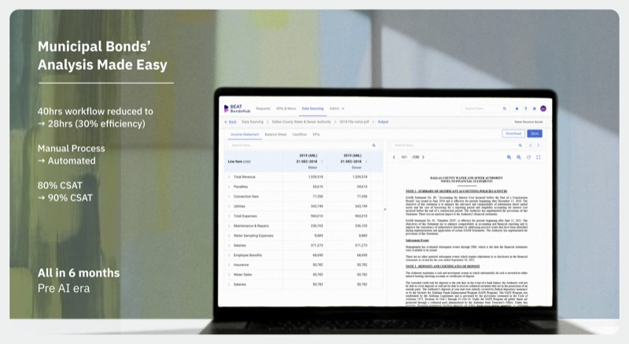
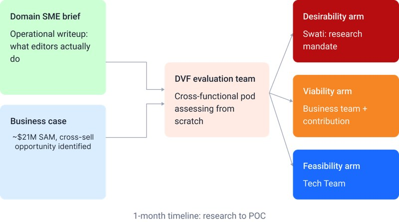
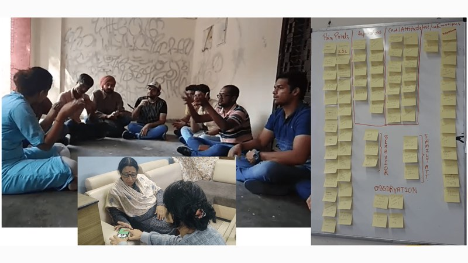
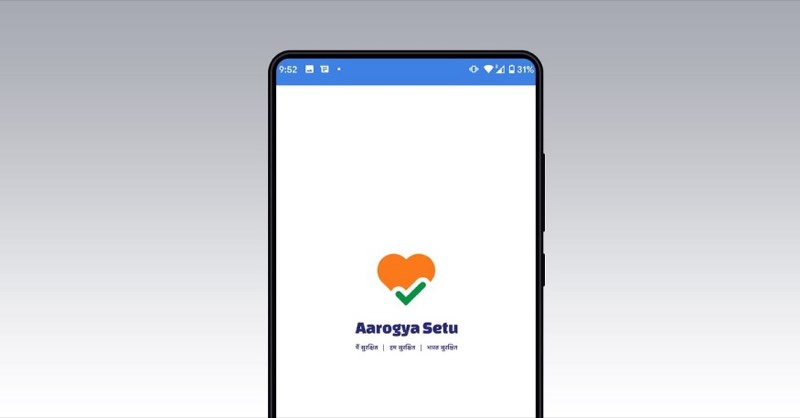

5/5teams acted
My work at ServiceNow
01Research impact
Five teams took five confirmed actions after 14 focus groups and a 3-day workshop with 15 enterprise customers.
Read the case studyI'm a UX designer and researcher with six years in B2B and enterprise SaaS, focused on shipping design decisions, not only informing them.
Lately I've led research, information architecture and interaction design for an internal enterprise tool, run the usability tests, and shipped the fixes to production.
At ServiceNow, research left the deck. Each team below made a change it confirmed to me.
confirmed actions from five teams, one study each
01Research impact
Five teams took five confirmed actions after 14 focus groups and a 3-day workshop with 15 enterprise customers.
Read the case study
02Product design
Analysts rebuilt financial models by hand from long filings. The platform cut a 40-hour workflow to 28.
Read the case study03Solo research study
Six interviews with Tier-2 SOC analysts on where AI can safely take on more of an investigation.
Read the case study
04Research and design
A subject-expert brief became a live AI editing product inside Word in two months.
Read the case study05Research study
About 30% of users left MakeMyTrip's international booking before the review page. The study asked why.
Read the case study
06Sign-language app
Helps families learn Indian Sign Language, in English and Hindi, to talk with a hearing-impaired relative.
Read the case study
07UX evaluation
A one-week remote evaluation of India's COVID-19 app, presented to government stakeholders.
Read the case studyThank you for joining me on this exploration of my journey as a UX designer and researcher. I care about user-centred experiences that make a positive impact, and I've delivered meaningful outcomes by pairing research with close work alongside cross-functional teams.
Feel free to write to me with questions or opportunities to collaborate.